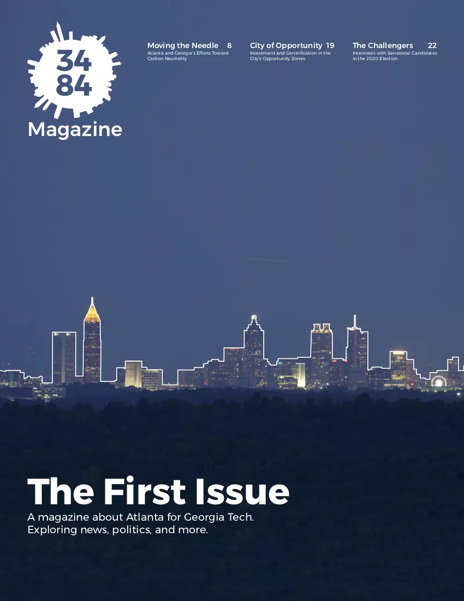
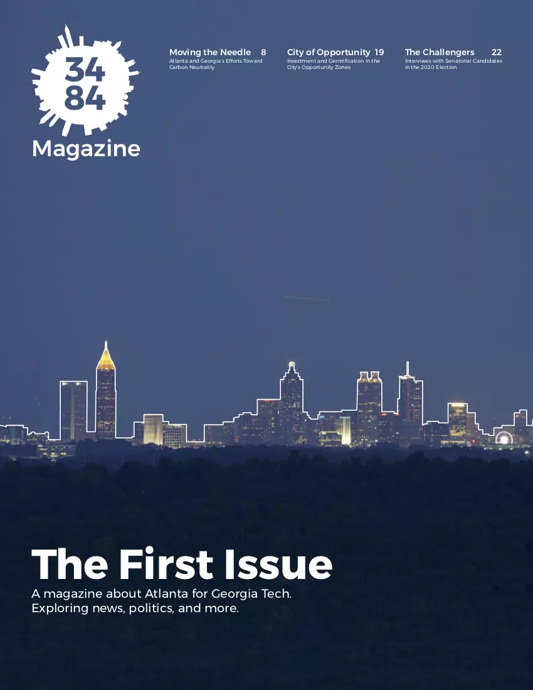
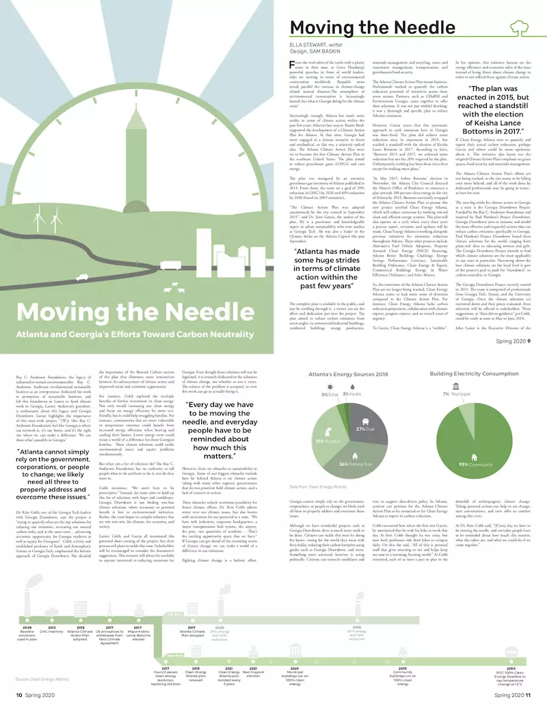
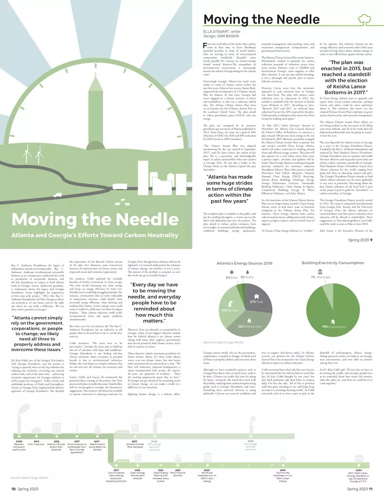

3484 Magazine is a semesterly news magazine at Georgia Tech that focuses on long term issues in Atlanta. I co-founded the magazine in my freshman year at Tech, and was the creative director throughout college, establishing style guides, color palettes, and guidelines for articles. The magazine is print and digital.
 

 

In addition to print articles, we also frequently post on our social media accounts. While the full length articles focus on long-term issues, our social media provides updates on shorter-term stories that relate to those larger issues. Our Instagram account usually posts an interesting image or graphic that we create as well as a short caption explaining an update on an issue.
Freelance design and personal projects